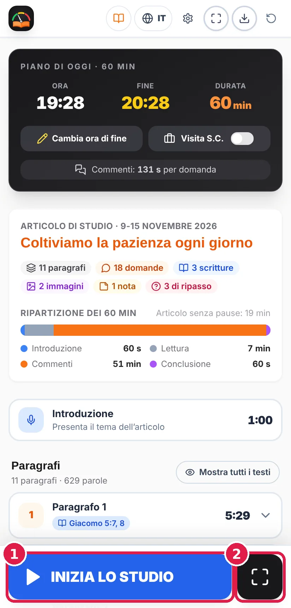
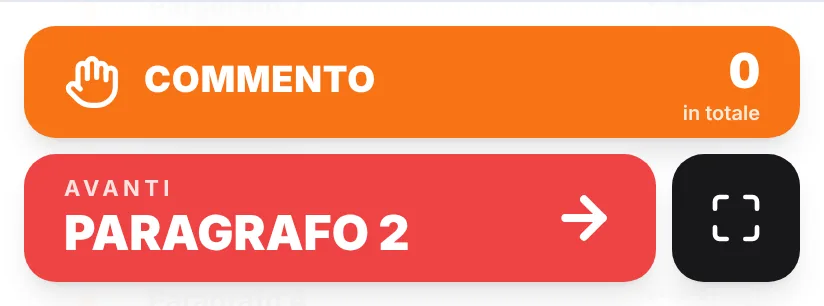
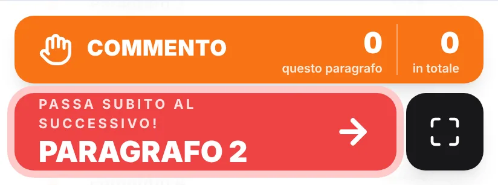
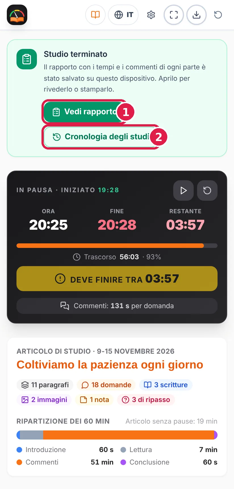
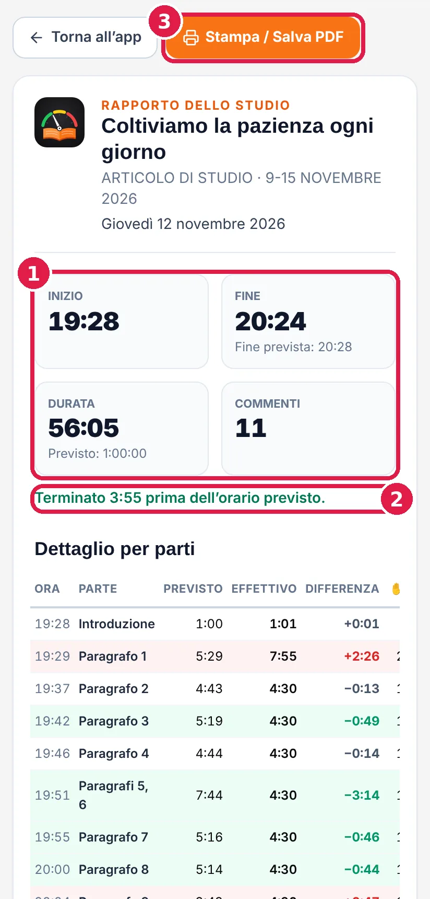
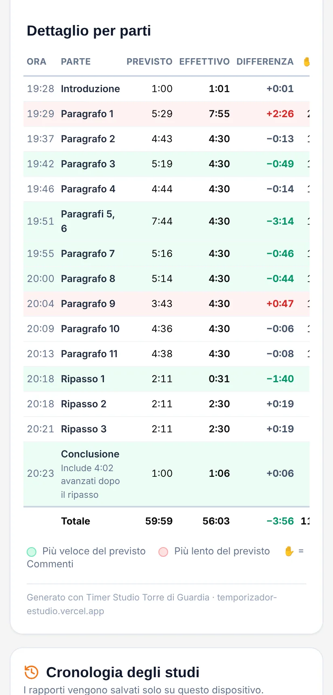
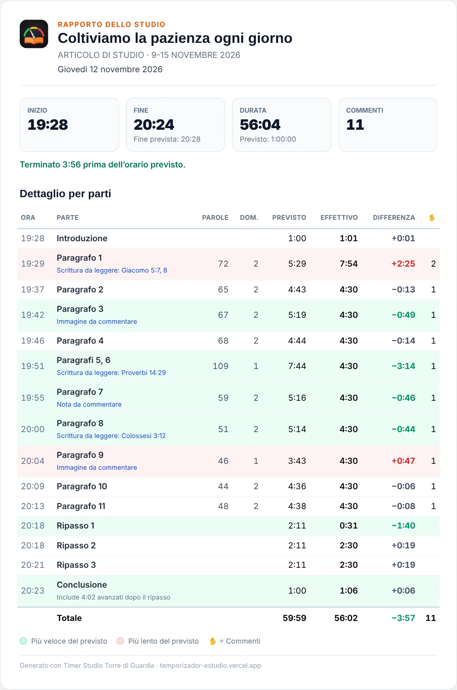
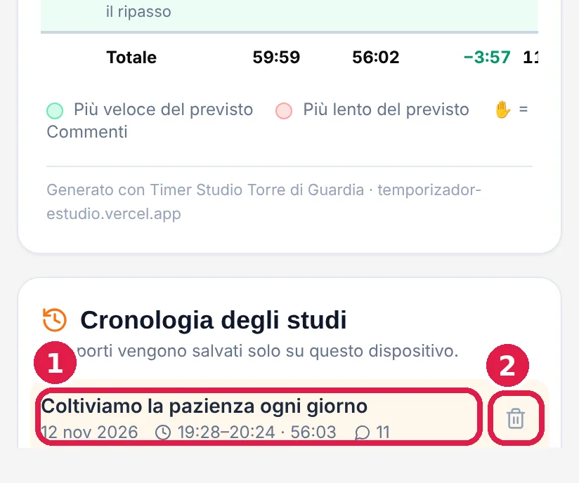

Come preparare e condurre lo Studio Torre di Guardia nei tempi
Versione 4.0 · novembre 2026
⚠ Due avvertenze importanti
Conduci sempre con la pubblicazione originale. L’app mostra i paragrafi e le domande solo per calcolare i tempi. Il conduttore non deve mai basarsi sul contenuto che compare nel timer: per presentare le informazioni all’uditorio usa sempre l’app JW Library o la rivista La Torre di Guardia stampata.
Durante lo studio, usa la modalità presentazione. È il modo consigliato di usare il timer mentre conduci, perché evita distrazioni: mostra solo ciò che serve, con i colori verde, giallo e rosso per capire con un’occhiata come sei messo con i tempi, e con pulsanti grandi e facili da premere per passare al paragrafo successivo e per segnare i commenti (sezione 9).
Il Timer dello Studio aiuta il fratello che conduce lo Studio Torre di Guardia a distribuire bene il tempo e finire in orario.
Carichi l’articolo della settimana in PDF e l’app:
legge l’articolo e trova i paragrafi, le domande, i versetti da leggere, le immagini, le note e le domande di ripasso;
calcola quanto tempo dedicare a ogni parte: introduzione, ciascun paragrafo, ripasso e conclusione;
ti guida durante lo studio con un cronometro per paragrafo e colori che indicano se sei in tempo, nella tolleranza o oltre il tempo;
si riadatta da sola: se un paragrafo si allunga, distribuisce il tempo rimasto tra i successivi perché tu finisca in orario.
App non ufficiale. È un progetto gratuito e indipendente. Non è una pubblicazione ufficiale e non ha legami con jw.org né con l’organizzazione dei Testimoni di Geova. L’articolo viene analizzato sul tuo dispositivo: non viene inviato né salvato su alcun server.
Le immagini di questo manuale usano un articolo di esempio inventato, non un vero articolo della Torre di Guardia.
2Installare l’app
L’icona dell’app è un libro arancione con un indicatore colorato (verde, giallo e rosso) su sfondo nero.
Se usi già l’app dal browser su un dispositivo Android, nella schermata iniziale vedrai la scheda verde «Usi Android?» con il pulsante «Apri in Google Play».
iPhone e iPad
Non è ancora nell’App Store, ma funziona allo stesso modo dal web:
Tocca il pulsante Condividi (il quadrato con la freccia verso l’alto).
Scegli «Aggiungi alla schermata Home» e tocca Aggiungi. L’icona apparirà sullo schermo.
Computer
Apri temporizador-estudio.vercel.app in Chrome o Edge. Se vuoi, installala come programma con l’icona di installazione nella barra degli indirizzi.
Aggiornamenti: quando c’è una nuova versione appare un avviso con il pulsante Aggiorna. L’app non si aggiorna mai da sola durante uno studio.
3La schermata iniziale
È la prima cosa che vedi quando apri l’app. I numeri rossi nell’immagine indicano dove si trova ogni cosa.
Schermata iniziale.
Pulsante del libro: apre questo manuale in qualsiasi momento.
«Prima volta con l’app?»: apre la guida rapida o il manuale. Quando conosci l’app, tocca Nascondi.
«Usi Android?» (solo sui telefoni Android che usano il browser): installa l’app da Google Play. Si può anche nascondere.
Più in basso trovi:
Piano di oggi: l’ora attuale, l’ora in cui finisce lo studio e la sua durata.
Articolo di questa settimana: per scaricare la rivista e aprirla (sezione 4).
Visita del sorvegliante di circoscrizione: l’interruttore per lo studio di 30 minuti (sezione 13).
Impostazioni dello studio: un riepilogo delle impostazioni, con il link Cambia.
In fondo, i link a privacy, manuale, Google Play e cronologia degli studi.
In alto ci sono anche la lingua (IT) e le impostazioni⚙.
4Caricare l’articolo della settimana
La scheda “Articolo di questa settimana” mostra la settimana corrente (per esempio, 9-15 novembre 2026) e il numero della Torre di Guardia che la contiene. Con le frecce ‹› puoi scegliere un’altra settimana.
“1. Scarica la rivista da jw.org” apre il PDF ufficiale del numero corrispondente. Su Android viene salvato in Download; su iPhone tocca Condividi → “Salva in File”.
“2. Scegli il PDF scaricato”: seleziona quel file. L’app cerca nella rivista l’articolo della settimana scelta e lo analizza. Dopo aver toccato il passo 1, quando torni nell’app questo pulsante diventa verde (“Scaricato? Tocca qui per aprirlo”): basta un tocco.
La Torre di Guardia viene scaricata nella lingua dell’app. Se l’app è in italiano, viene scaricata l’edizione italiana; se è in inglese, quella inglese, e così per tutte le lingue. Per scaricare un’altra lingua, cambia prima la lingua dell’app (sezione 14). In portoghese viene scaricata l’edizione del Portogallo o quella del Brasile, secondo la tua scelta.
L’app conserva una copia della rivista. Le settimane successive dello stesso numero si aprono direttamente con “Apri l’articolo di questa settimana”, senza scaricare nulla. Le riviste salvate si cancellano da sole 3 mesi dopo la loro ultima settimana.
Sul computer puoi anche trascinare il PDF in un punto qualsiasi della schermata iniziale (compare l’avviso “Rilascia qui il PDF della Torre di Guardia”) o scegliere la cartella in cui conservi le riviste, e l’app le troverà da sola.
Dice che la rivista non è ancora pubblicata? jw.org pubblica ogni numero alcune settimane prima. Se scegli una settimana molto lontana, potrebbe non essere ancora disponibile.
5Il riepilogo e il piano dello studio
Il piano di oggi.Il riepilogo dell’articolo.
Ora di fine: l’ora in cui finisce lo studio.
«Cambia ora di fine»: se l’adunanza finisce a un’altra ora, scrivila qui. Tutto viene ricalcolato per finire a quell’ora.
Sotto, il riepilogo dell’articolo mostra:
il titolo e la settimana;
quanti paragrafi, domande, scritture, immagini e note contiene;
una barra colorata con la divisione del tempo: IntroduzioneLetturaCommentiConclusione.
Nel piano vedrai anche «Commenti: X s per domanda»: il tempo medio per rispondere a ogni domanda.
Se l’articolo non rientra nel tempo scelto, appare un avviso. Puoi allungare la durata o scegliere una lettura più veloce nelle Impostazioni.
6L’elenco dei paragrafi
Ogni paragrafo appare su una riga con il suo numero e il suo tempo previsto. Tocca un paragrafo per aprirlo.
Un paragrafo aperto.
Dati del paragrafo, ognuno con il suo colore: parole (grigio), tempo di lettura (blu) e domande (arancione). Durante lo studio appare anche l’orario previsto (viola).
Tempo previsto per il paragrafo: il totale e come si divide. La barra mostra la lettura (blu), i commenti (arancione) e, nei paragrafi lunghi, un extra per altri commenti (verde). Le parti sommate danno il totale.
«Inizia da qui»: se lo studio è già iniziato (per esempio, arrivi tardi), salta a questo paragrafo.
Le etichette colorate indicano a cosa fare attenzione:
Etichetta
Cosa significa
Giacomo 5:7, 8
C’è una scrittura da leggere.
Immagine
La domanda parla di un’immagine dell’articolo.
Nota
C’è una nota da commentare.
★ Punto chiave
La domanda cita un riquadro o un’idea tra virgolette.
Con «Mostra il testo del paragrafo» puoi leggere il testo per preparare i tempi. Per condurre usa sempre la pubblicazione originale.
I paragrafi che hanno la stessa domanda (per esempio «5, 6») vanno insieme, e il pulsante Avanti salta tutto il gruppo.
7Condurre lo studio passo dopo passo
Consigliato: durante lo studio usa la modalità presentazione (sezione 9). Qui si spiega come funziona; è uguale nelle due viste.
Sul telefono, i pulsanti principali sono sempre in basso:

Prima di iniziare.Durante un paragrafo.
Grande pulsante blu: ti dice cosa viene dopo. Toccalo ogni volta che passi a un’altra parte: Inizia lo studio → Paragrafo 1 → Paragrafo 2 → … → Ripasso → Conclusione → Termina lo studio.
Pulsante nero⛶: apre la modalità presentazione.
Durante i paragrafi appare anche il pulsante arancione ✋ COMMENTO: toccalo ogni volta che qualcuno commenta. Alla fine vedrai quanti commenti ci sono stati.
Introduzione. Tocca «Inizia lo studio». Partono il cronometro generale e quello dell’introduzione.
Paragrafi. Tocca Avanti all’inizio di ogni paragrafo. Vedrai il tempo trascorso sul tempo previsto (per esempio 1:11 / 5:43) e il colore (sezione 8).
Domande di ripasso. Dopo l’ultimo paragrafo vengono le domande del riquadro finale.
Conclusione. Dura esattamente il tempo che resta fino all’ora di fine: se avanza tempo, lo usa tutto, anche se è più del minuto delle Impostazioni, e se ne resta meno, si accorcia. Se si supera l’ora di fine, diventa rossa.
Termina lo studio. Il cronometro si ferma e viene salvato il rapporto dello studio (sezione 15).
Introduzione in corso.Domande di ripasso.Conclusione.
Con il pulsante ⏸ del piano puoi mettere in pausa il cronometro se c’è un’interruzione. In pausa si ferma il cronometro della parte in corso, ma l’ora di fine non si sposta: il tempo rimanente continua a scendere, perché l’adunanza finisce all’ora stabilita.
8I colori: verde, giallo e rosso
La scheda della parte in corso (paragrafo, introduzione, domanda di ripasso o conclusione) cambia colore in base al tempo trascorso:
Colore
Quando
Che cosa fare
IN TEMPO
Fino al tempo previsto.
Tutto bene: continua così.
TOLLERANZA
Ha superato il suo tempo, ma non più del 30%.
Comincia a chiudere i commenti.
SFORATO
Oltre il 30% in più del previsto.
Passa al paragrafo successivo.
In tempo.Tolleranza, con il tempo di sforamento.Sforato.
Negli ultimi 5 minuti dello studio i paragrafi e le domande di ripasso non hanno tolleranza: passano direttamente dal verde al rosso, per non togliere tempo alla parte finale. La conclusione mantiene sempre la sua tolleranza.
Se una parte si allunga, nessun problema: quando tocchi Avanti, l’app ridistribuisce il tempo rimasto tra ciò che manca, per finire in orario.
Anche il pulsante «Avanti» ti avvisa
Quando la parte in corso diventa rossa, cambia anche il grande pulsante per andare avanti, così lo noti senza cercarlo:

Rosso: si può ancora recuperare.

Lampeggia: passa subito al successivo.
Pulsante rosso: la parte ha superato il tempo, ma si può ancora recuperare in quello che resta. Comincia a chiudere i commenti.
Pulsante rosso che lampeggia con «Passa subito al successivo!»: non c’è più modo di recuperare il tempo (resterebbero meno di 30 secondi per ogni domanda che manca, oppure sei negli ultimi 5 minuti). Passa avanti appena puoi.
Nella modalità presentazione il pulsante diventa bianco con le lettere rosse, così si vede bene su qualsiasi colore di sfondo.
Se non lo vuoi, disattivalo in Impostazioni → Avvisi → «Pulsante «Avanti» rosso».
9La modalità presentazione
È il modo consigliato per condurre lo studio. Mostra solo ciò che serve, con testi e pulsanti grandi, e il colore ti dice a colpo d’occhio come sei con il tempo.
Si apre con il pulsante ⛶ in basso e si chiude con la ✕ in alto (o con il tasto «indietro» del telefono, senza uscire dall’app).
La modalità presentazione durante un paragrafo.
Riquadro colorato: dove sei (per esempio Paragrafo 1), il cronometro di quella parte e il suo tempo previsto. Verde, giallo o rosso a seconda di come vai.
Commento: toccalo ogni volta che qualcuno commenta. A sinistra vedi i commenti di questo paragrafo (o di questa domanda) e a destra il totale.
Avanti: passa alla parte successiva. Il pulsante dice cosa viene dopo.
In alto vedi a che ora è iniziato lo studio, l’ora attuale, l’ora in cui finisce e il tempo che rimane.
Ci sono tre layout. Si cambiano con il pulsante ▦ in alto o in Impostazioni → Schermo:
Semaforo: tutto lo schermo cambia colore.Classico: con il contatore dei commenti.
Alla fine il pulsante grande dice «Termina lo studio» e poi «Vedi rapporto».
10Come si calcolano i tempi
Lettura di ogni paragrafo = le sue parole ÷ la velocità di lettura (150, 180 o 210 parole al minuto), più il tempo per risposta (almeno 30 secondi; 35 di base) per ogni scrittura, immagine, nota o punto chiave.
Introduzione e conclusione hanno il tempo delle Impostazioni (1 minuto ciascuna di base). La conclusione si adatta all’ora di fine: se dopo il ripasso avanza tempo, lo prende tutto; se ne resta meno, si accorcia.
Commenti: il resto del tempo si divide tra tutte le domande. I paragrafi lunghi o raggruppati ricevono un po’ di più (l’«extra» verde della sezione 6).
Durante lo studio: ogni volta che tocchi Avanti, quello che resta viene ricalcolato per finire in orario.
Esempio: in uno studio di 60 minuti con 11 paragrafi e 21 domande, circa 7 minuti sono di lettura, 2 di introduzione e conclusione e circa 51 di commenti: poco più di 2 minuti per domanda.
11Impostazioni
Tocca ⚙ in alto a destra. Le impostazioni vengono salvate sul tuo dispositivo e sono divise in quattro schede:
TempoLettura
AvvisiSchermo
Scheda
Che cosa puoi cambiare
Tempo
Durata dello studio (fino a 60 min). Durata dell’introduzione e della conclusione (da 30 s a 3 min). Visita del sorvegliante di circoscrizione.
Lettura
Velocità di lettura del lettore: Lenta (150), Normale (180) o Veloce (210 parole/min). Tempo per risposta (da 30 a 90 s; vale anche per ogni versetto, immagine, nota o punto chiave). Paragrafi lunghi o raggruppati: Nessun extra, Normale o Più commenti.
Avvisi
Suono e vibrazione (con pulsanti per provarli). Avviso di paragrafo sforato, avviso “Mancano 5 minuti” e fino a due avvisi prima del ripasso.
Schermo
Lingua, tema chiaro o scuro (con quattro varianti scure) e il layout della modalità presentazione.
Se cambi la velocità di lettura o il tempo per risposta con lo studio in corso, la modifica vale per lo studio successivo.
12Avvisi sonori e a vibrazione
Paragrafo sforato: suona quando il paragrafo in corso supera il suo tempo.
Mancano 5 minuti: 5 minuti prima dell’ora di fine, con suono, vibrazione e un messaggio sullo schermo.
Prima del ripasso: scrivi quanti minuti prima delle domande di ripasso vuoi un avviso (per esempio, 10 e 5). Lascia vuoto se non lo vuoi.
Poco tempo per il ripasso: se restano meno di 20 secondi per domanda di ripasso, l’app ti avvisa.
Pulsante «Avanti» rosso: il pulsante per andare avanti diventa rosso quando una parte supera il tempo e lampeggia quando non c’è più modo di recuperarlo (sezione 8).
Controlla che il telefono non sia in modalità silenziosa se vuoi sentire gli avvisi. La vibrazione funziona su Android; su iPhone dipende dal browser.
13Visita del sorvegliante di circoscrizione
Interruttore attivo: studio di 30 minuti.
Nella settimana della visita attiva l’interruttore “Visita del sorvegliante di circoscrizione” nella schermata iniziale (o in Impostazioni → Tempo). Lo studio dura 30 minuti e i paragrafi non si leggono: restano le domande, i versetti, le immagini e il ripasso. Ricordati di disattivarlo dopo la visita.
14Lingue
Menu della lingua.
L’app funziona in spagnolo, inglese, tedesco, italiano, francese, portoghese, polacco, olandese e rumeno. Cambia lingua con il pulsante del globo in alto o in Impostazioni → Schermo. Quando cambi lingua:
tutta l’app compare in quella lingua, con le sue date e ore;
il pulsante di jw.org scarica La Torre di Guardia nella stessa lingua. È la lingua dell’app a decidere la lingua della rivista;
in portoghese l’app chiede una volta se preferisci l’edizione del Portogallo o quella del Brasile. Puoi cambiarlo poi in Impostazioni → Schermo.
Questo manuale è disponibile in tutte queste lingue: usa i pulsanti della lingua in alto.
15Alla fine: il rapporto e la cronologia
Quando tocchi «Termina lo studio», l’app salva un rapporto con i tempi di ogni parte. Ti aiuta a vedere cosa si è allungato e a migliorare la volta successiva.

In alto appare la scheda «Studio terminato».
Vedi rapporto: apre il rapporto di questo studio in una scheda a parte.
Cronologia degli studi: apre l’elenco di tutti gli studi salvati.
Il rapporto

Parte superiore del rapporto.

La tabella con ogni parte.
Inizio, fine e durata dello studio, con la fine prevista e il totale dei commenti.
Riepilogo in una frase, per esempio «Terminato 3:57 prima dell’orario previsto» (in verde) o «dopo» (in rosso).
Stampa / Salva PDF: per stamparlo su carta o salvarlo come file.
La tabella ha una riga per ogni parte: introduzione, ogni paragrafo, ogni domanda di ripasso e conclusione. In ogni riga vedrai:
l’ora in cui è iniziata quella parte;
Previsto ed Effettivo: il tempo del piano e quello usato davvero;
Differenza: in verde se è stato più veloce e in rosso se si è allungato;
✋: i commenti segnati.
Sul computer e in stampa appaiono anche le parole e le domande di ogni paragrafo. Il rapporto stampato sta in un solo foglio.

Il rapporto completo, come si vede sul computer o stampato.
La cronologia degli studi

Elenco degli studi salvati, sotto il rapporto.
Tocca uno studio per vedere il suo rapporto. Mostra data, orari, durata e commenti.
Cestino: per eliminare un rapporto. Tocca una volta e poi conferma con «Eliminare?».
I rapporti si salvano solo su questo dispositivo, mai su internet. Si conservano fino a 100 studi. Se cancelli i dati del browser o dell’app, la cronologia si perde.
Puoi aprire la cronologia anche dal link «Cronologia degli studi» in fondo alla schermata iniziale.
Altre opzioni
Sotto il piano trovi anche le statistiche dei tempi di ogni paragrafo.
Con il pulsante esporta⬇ in alto puoi salvare il piano dello studio come immagine o PDF.
Per preparare un altro studio, tocca ricomincia↻.
16Domande frequenti
Posso condurre leggendo i paragrafi e le domande nell’app?
No. L’app li mostra solo per calcolare i tempi. Per condurre usa sempre JW Library o la Torre di Guardia stampata.
Perché La Torre di Guardia è stata scaricata in un’altra lingua?
La rivista viene scaricata nella lingua dell’app. Cambia la lingua con il pulsante del globo e tocca di nuovo “Scarica la rivista da jw.org”.
Dice che non riconosce il formato dell’articolo.
Usa il PDF ufficiale della Torre di Guardia, edizione per lo studio, scaricato da jw.org (il pulsante “Scarica la rivista da jw.org” lo fa per te). I PDF scansionati o fatti con screenshot non si possono leggere.
Non trova l’articolo della settimana nella rivista.
Controlla che la settimana scelta corrisponda a quel numero della rivista. Altrimenti l’app mostra l’articolo più vicino e ti fa scegliere un’altra settimana.
Mi serve internet durante lo studio?
Solo per scaricare la rivista. Una volta caricato l’articolo, il timer funziona senza connessione.
Sono arrivato tardi o ho iniziato in ritardo: che cosa faccio?
Apri il paragrafo a cui siete arrivati e tocca “Inizia da qui”. L’app distribuirà il tempo rimasto.
Voglio finire a un’ora precisa.
Usa “Cambia ora di fine” nel piano di oggi e scrivi l’ora. Tutto viene calcolato per finire a quell’ora.
Gli avvisi non suonano.
Controlla in Impostazioni → Avvisi che siano attivi, tocca “Prova suono” e verifica che il telefono non sia in modalità silenziosa.
Quali dati salva l’app?
Solo le tue impostazioni e le riviste che scegli di conservare, sempre sul tuo dispositivo. Non ci sono account e nessun dato viene inviato a un server. Maggiori informazioni nell’informativa sulla privacy.
Dove vedo gli studi delle altre settimane?
Nella cronologia degli studi: tocca «Cronologia degli studi» alla fine di uno studio o usa il link in fondo alla schermata iniziale.
Posso eliminare un rapporto?
Sì. Nella cronologia, tocca il cestino accanto allo studio e poi conferma con «Eliminare?».
Perché la conclusione è durata più del previsto?
Se dopo il ripasso avanza tempo, la conclusione prende quel tempo per finire in orario. Il rapporto lo indica sotto «Conclusione».